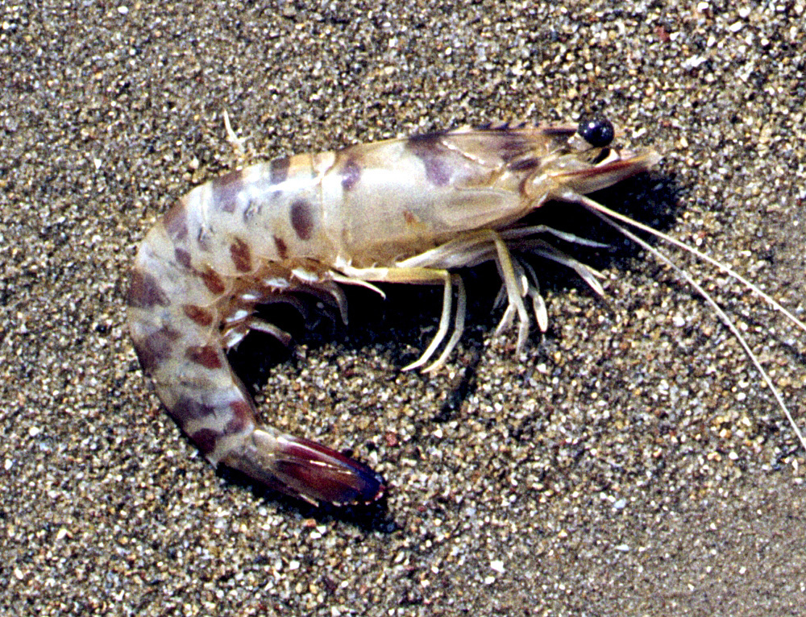

Melicertus kerathurus (Γάμπαρη)

Η γαμπάρη της Μεσογείου είναι η γαρίδα Melicertus kerathurus, ένα σημαντικό βενθικό καρκινοειδές της οικογένειας Penaeidae με μεγάλη εμπορική αξία σε Αμβρακικό και γενικά στη Μεσόγειο.
Μορφολογία
Έχει μακρύ, σχετικά λεπτό σώμα με χαρακτηριστικές σκούρες εγκάρσιες ραβδώσεις στο καραπάτσιο και στην ουρά, που της δίνουν την όψη «ριγωτής» γαρίδας. Τα ενήλικα άτομα φτάνουν περίπου 12–20 cm μήκος, με ημιδιαφανές μπεζ‑ροζ σώμα που κοκκινίζει έντονα στο μαγείρεμα.
Πού τη συναντάμε
Η γαμπάρη απαντά σε όλη σχεδόν τη Μεσόγειο και τον ανατολικό Ατλαντικό, από την Πορτογαλία μέχρι την Αγκόλα, σε παράκτιες και εκβολικές ζώνες. Ζει βενθικά πάνω σε αμμώδεις ή αμμοϊλυώδεις βυθούς, σε βάθη περίπου 5–50 m (σπάνια βαθύτερα), συχνά σε περιοχές με Ποσειδωνία ή άλλη βλάστηση, και κάνει εποχικές μετακινήσεις ρηχά–βαθιά ανάλογα με τη θερμοκρασία.
Διατροφή
Πρόκειται για νυκτόβιο οργανισμό που τρέφεται κυρίως τη νύχτα, βγαίνοντας από την άμμο για να αναζητήσει τροφή. Η δίαιτά της αποτελείται από μικρά βενθικά ασπόνδυλα όπως πολυχαιτά σκουλήκια, δίθυρα και γαστερόποδα μαλάκια, μικρές γαρίδες και άλλα καρκινοειδή, με διαφορές ανάμεσα σε νεαρά και ενήλικα άτομα.
Συνθήκες εκτροφής
Η Melicertus kerathurus έχει μελετηθεί ως υποψήφιο είδος υδατοκαλλιέργειας, επειδή αντέχει σε παράκτιες, σχετικά θερμές ζώνες και παρουσιάζει ικανοποιητικούς ρυθμούς ανάπτυξης. Πειράματα εκτροφής δείχνουν ότι τα νεαρά άτομα αναπτύσσονται καλά σε θαλάσσια ή υφάλμυρα νερά με θερμοκρασίες περίπου 18–24 °C, βυθό με άμμο/ιλύ για να θάβονται, καλή οξυγόνωση και πλούσιες σε πρωτεΐνη τροφές (μείγματα αλεσμένων θαλάσσιων οργανισμών ή ειδικές βιομηχανικές τροφές).